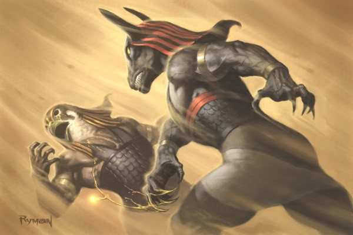

Holy War Genesis is a fast-paced traditional fighter where the gods of mythos from many different cultures and times clash together. While in the alpha stage, the game only has training and arcade modes, we plan to add quite a few more modes to the game that will hopefully make Holy War Genesis a worthwile experience. Our biggest priority lies in developing the Online Mode with rollback netcode, but, later down the line, we have plans to add an RPG style Campaign mode where you play as one of the many deithic beings fighting for control over the mortal world. For now, however, we are focusing on getting feedback to develop the core features of the game before we start working on extraneous modes. Thank you for checking out Holy War Genesis, and we hope to provide more features down the road for you to mess with.
